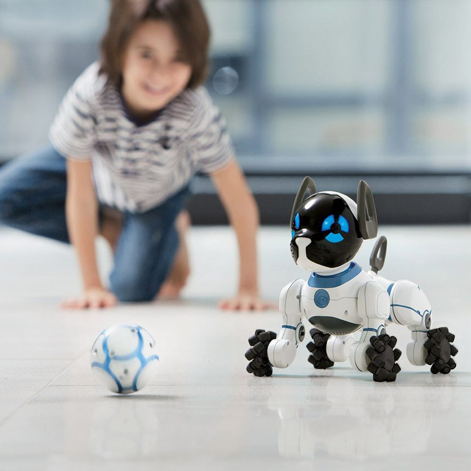
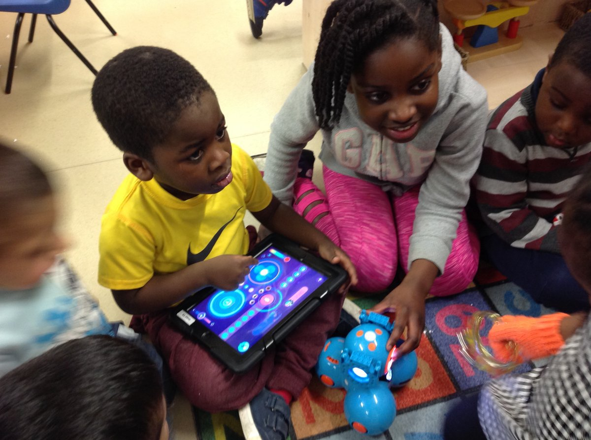

Nós podemos enviar robôs para o oceano,
podemos enviar robôs para vulcões,
e agora podemos até mesmo pousar robôs em Marte...
Por que eles não estão em nossas casas?
A tecnologia certamente mudou nossas vidas, e os robôs vão mudar a forma como interagimos com a tecnologia.
A perspectiva da indústria tecnológica é que os robôs serão os próximos dispositivos, depois dos smartphones, a ultrapassar a população humana. De fato, haverá muitos robôs em funcionamento e a venda no mundo dentro de 5 ou 10 anos.
Com o avanço da tecnologia, os preços dos robôs vêm caindo a cada ano e a demanda por eles aumenta cada vez mais rápido, como demonstram os dados sobre comercio de robôs a seguir:
| Ano | Brasil | Mundo |
|---|---|---|
| 2014 | 1.266 | 220.571 |
| 2015 | 1.407 | 253.748 |
| 2016 | 1.800 | 290.000 |
| 2019* | 3.500 | 414.000 |
Fonte: Federação Internacional de Robótica(IFR), Associações Nacionais de Robôs.
*Estimativa
A robótica está cada vez mais presente em nossa realidade. Talvez a primeira coisa que surge em nosso imaginário ao pensar em robôs, ainda sejam aquelas grandes maquinas como os braços robóticos utilizados pela Indústria Automobilística, mas os robôs domésticos estão ganhando cada vez mais espaço, seja para ajudar nas tarefas de casa ou para entretenimento, como um robô que se comporta como animal de estimação inteligente. Os modelos voltados a recreação mais recentes são equipados com inteligência artificial e capazes de reconhecer seu dono, desenvolver personalidade única e demonstrar afeição.
Confira a seguir alguns dos robôs domésticos voltados a recreação do mercado atual:
Robô CHiP
Leia mais
Robô Dash & Dot
Leia mais